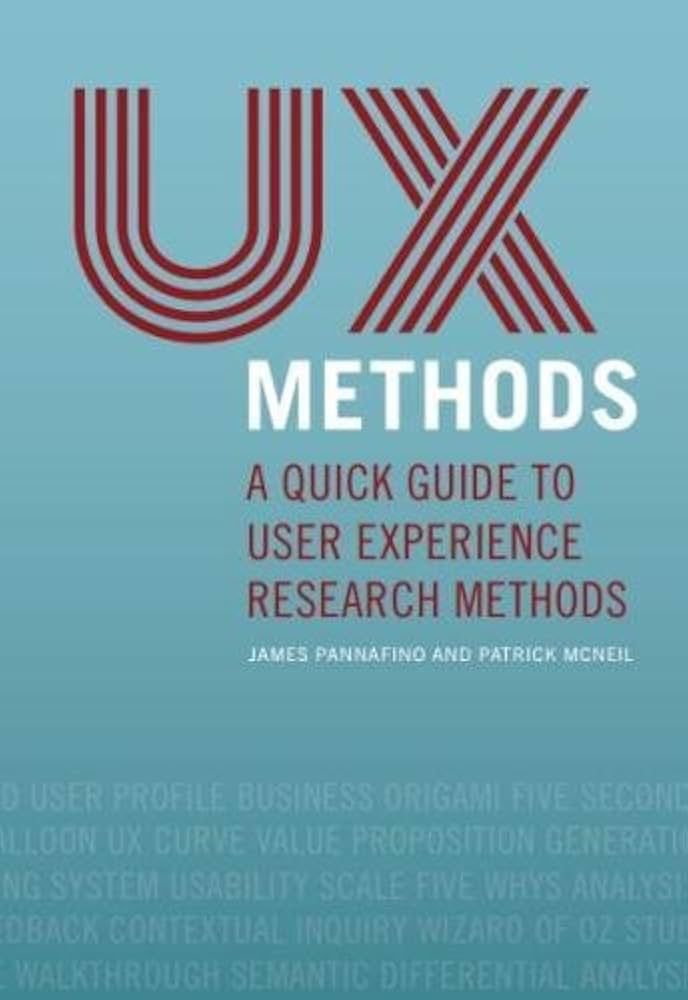
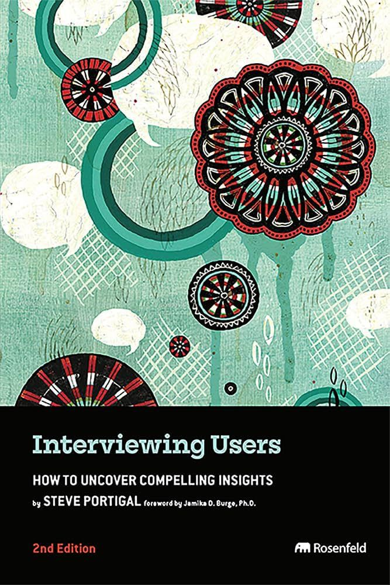
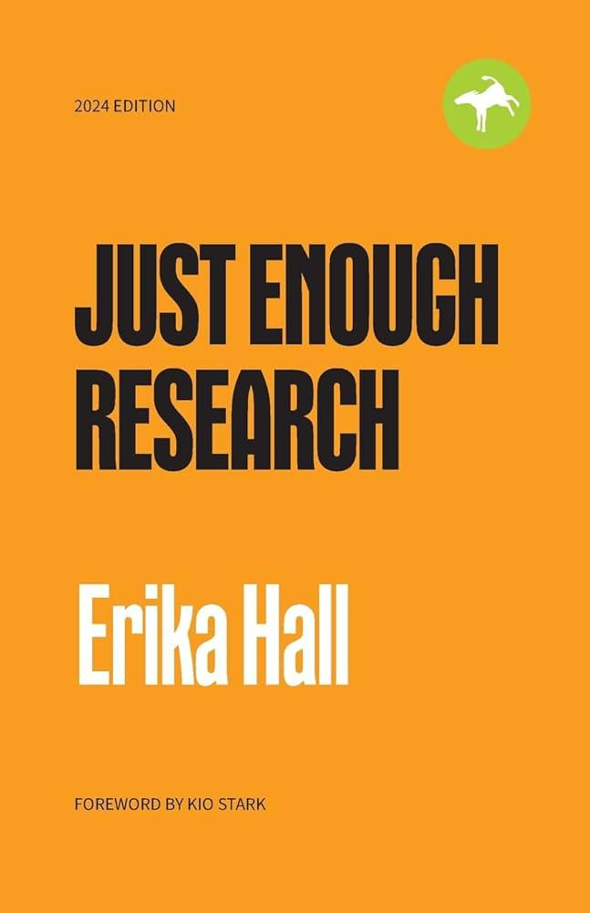

HCI2203 - User Research
Course Specification - BSc in Human Computer Interaction
Course Code
HCI2203
Credit Hours
3 (60 Contact Hours)
Level
2nd Year / 3rd Level
Prerequisites
HCI1201
Department
Software Engineering - College of Computing
Umm Al-Qura University
Course Description
This course introduces students to core methods and principles in user research, focusing on understanding and analyzing user needs, behaviors, and experiences. Students learn to design and conduct user research studies including interviews, usability testing, surveys, and ethnographic field studies. The course covers data analysis, synthesis, and application of research insights to the design process.
Course Learning Outcomes (CLOs)
| Code | Learning Outcome | PLOS | Teaching Strategies | Assessment Methods |
|---|---|---|---|---|
| 1.0 | Recognize different user research methods | K3 | Lectures, Labs, Assignments, Group discussions | Project |
| 2.0 | Apply suitable user research methods | S1 | Labs, Group Assignments, discussions | Project |
| 3.0 | Identify users needs, state-of-the-art interaction opportunities | S2 | Lectures, Labs, Assignments, Group discussions | Project |
| Communicate with a wide range of users | S5 | Group discussions, Assignments | Project | |
| 4.0 | Adhere to ethical and professional standards when contacting users | V1 | Lectures, Labs, Group discussions | Assignments, Project |
| Make design choices prioritizing real user needs | V4 | Lectures, Labs, Group discussions | Assignments, Project |
Course Topics
- Introduction to User Research (3 hrs)
The relationship between user research, UX design, and product development. Research Lifecycle. - Planning User Research (4 hrs)
Defining research goals, questions, selecting methods, building research plans. - Conducting User Interviews (8 hrs)
Principles, techniques, scripting, analyzing interview data. - Ethnographic Research (5 hrs)
Observational techniques, field notes, analyzing context and behavior. - Usability Testing (6 hrs)
Planning, moderating tests, heuristic evaluation, Nielsen's heuristics. - Survey Design (6 hrs)
Designing surveys, unbiased questions, data analysis methods. - Analyzing Qualitative Data (6 hrs)
Coding data, identifying patterns, affinity diagrams, personas. - Analyzing Quantitative Data (6 hrs)
Survey metrics, visualization tools, data-driven decisions. - Synthesizing Research Findings (10 hrs)
Personas, journey maps, prioritizing needs, design recommendations. - Communicating Findings (5 hrs)
Research reports, presentations, storytelling for stakeholders. - User Research in Iterative Design (4 hrs)
Research in design sprints, prototype testing, A/B testing.
Student Assessment
| Assessment Activity | Week | Weight | Alignment with CLOs |
|---|---|---|---|
| Quizzes | 4, 8 | 10% | 1.0, 2.0 |
| Midterm Exam | 9 | 25% | 1.0, 2.0 |
| Assignments & Labs | 3-14 | 25% | 2.0, 3.0 |
| Group Project | 15 | 30% | All CLOs |
| Final Exam | 16 | 10% | 1.0, 4.0 |
References

Research Methods for UX
by Paul Boag

Interviewing Users
by Steve Portigal

Just Enough Research
by Erika Hall